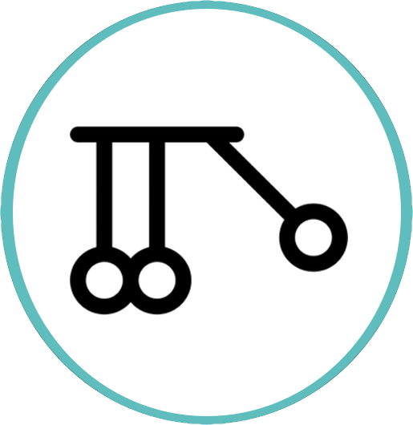

TACC Home
TACC.cloud
Developer Docs
User Portal
Platform Status

Documentation
Reactors SDK
develop
Quick Start
Pre-requisites
Start a Project
Let’s go!
Configure the Project
Step 1: Edit config.rc
Step 2: Edit config.yml
Step 3: Create secrets.json
Write some code
Deploy the Reactor
Validate deployment
Test by sending a message
User Guide
User Guide
Reactor
Attributes
Functions
Assistants
abacoids
agaveutils
aliases
jsonmessages
process
Scenarios
Third-party Webhooks
Agave API Notifications
Finite State Machine
Schedule Actions
Automate Deployment
Unit Testing
RabbitMQ
AWS SNS
Resources
Getting Help
TACC.cloud Slack
Tenant-specific Assistance
Other Tutorials and Guides
Porting
Use third-party Docker images
Import from other Serverless systems
Extend to other languages
Contributing
Contribute to Reactors
Reactors SDK
Docs
»
process
Edit on GitHub
process
¶